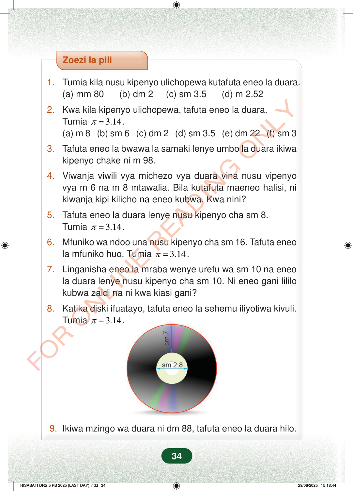

Zoezi la pili1.Tumia kila nusu kipenyo ulichopewa kutafuta eneo la duara.(a) mm 80 (b) dm 2 (c) sm 3.5 (d) m 2.522.Kwa kila kipenyo ulichopewa, tafuta eneo la duara.Tumia3.14π=.(a) m 8 (b) sm 6 (c) dm 2 (d) sm 3.5 (e) dm 22 (f) sm 33.Tafuta eneo la bwawa la samaki lenye umbo la duara ikiwakipenyo chake ni m 98.4.Viwanja viwili vya michezo vya duara vina nusu vipenyovya m 6 na m 8 mtawalia. Bila kutafuta maeneo halisi, nikiwanja kipi kilicho na eneo kubwa. Kwa nini?5.Tafuta eneo la duara lenye nusu kipenyo cha sm 8.Tumia3.14π=.6.Mfuniko wa ndoo una nusu kipenyo cha sm 16. Tafuta eneola mfuniko huo. Tumia3.14π=.7.Linganisha eneo la mraba wenye urefu wa sm 10 na eneola duara lenye nusu kipenyo cha sm 10. Ni eneo gani lililokubwa zaidi na ni kwa kiasi gani?8.Katika diski ifuatayo, tafuta eneo la sehemu iliyotiwa kivuli.Tumia3.14π=.9.Ikiwa mzingo wa duara ni dm 88, tafuta eneo la duara hilo.34
Zoezi la pili
1. Tumia kila nusu kipenyo ulichopewa kutafuta eneo la duara. (a) mm 80 (b) dm 2 (c) sm 3.5 (d) m 2.52
2. Kwa kila kipenyo ulichopewa, tafuta eneo la duara. Tumia 3.14 π = . (a) m 8 (b) sm 6 (c) dm 2 (d) sm 3.5 (e) dm 22 (f) sm 3
3. Tafuta eneo la bwawa la samaki lenye umbo la duara ikiwa kipenyo chake ni m 98.
4. Viwanja viwili vya michezo vya duara vina nusu vipenyo vya m 6 na m 8 mtawalia. Bila kutafuta maeneo halisi, ni kiwanja kipi kilicho na eneo kubwa. Kwa nini?
5. Tafuta eneo la duara lenye nusu kipenyo cha sm 8. Tumia 3.14 π = .
6. Mfuniko wa ndoo una nusu kipenyo cha sm 16. Tafuta eneo la mfuniko huo. Tumia 3.14 π = .
7. Linganisha eneo la mraba wenye urefu wa sm 10 na eneo la duara lenye nusu kipenyo cha sm 10. Ni eneo gani lililo kubwa zaidi na ni kwa kiasi gani?
8. Katika diski ifuatayo, tafuta eneo la sehemu iliyotiwa kivuli. Tumia 3.14 π = .
9. Ikiwa mzingo wa duara ni dm 88, tafuta eneo la duara hilo.
34
Zoezi la pili1.Tumia kila nusu kipenyo ulichopewa kutafuta eneo la duara.(a) mm 80(b) dm 2(c) sm 3.5(d) m 2.522.Kwa kila kipenyo ulichopewa, tafuta eneo la duara.Tumia <math><mrow><mi>π</mi><mo>=</mo><mn>3.14</mn></mrow></math>.(a) m 8(b) sm 6(c) dm 2(d) sm 3.5(e) dm 22(f) sm 33.Tafuta eneo la bwawa la samaki lenye umbo la duara ikiwa kipenyo chake ni m 98.4.Viwanja viwili vya michezo vya duara vina nusu vipenyo vya m 6 na m 8 mtawalia.Bila kutafuta maeneo halisi, ni kiwanja kipi kilicho na eneo kubwa.Kwa nini?5.Tafuta eneo la duara lenye nusu kipenyo cha sm 8.Tumia <math><mrow><mi>π</mi><mo>=</mo><mn>3.14</mn></mrow></math>.6.Mfuniko wa ndoo una nusu kipenyo cha sm 16.Tafuta eneo la mfuniko huo.Tumia <math><mrow><mi>π</mi><mo>=</mo><mn>3.14</mn></mrow></math>.7.Linganisha eneo la mraba wenye urefu wa sm 10 na eneo la duara lenye nusu kipenyo cha sm 10.Ni eneo gani lililo kubwa zaidi na ni kwa kiasi gani?8.Katika diski ifuatayo, tafuta eneo la sehemu iliyotiwa kivuli.Tumia <math><mrow><mi>π</mi><mo>=</mo><mn>3.14</mn></mrow></math>.Diski yenye tundu la duara katikati. Kutoka katikati hadi ukingo wa nje ni sm 7, na upana wa duara la ndani ni sm 2.8.sm 7sm 2.89.Ikiwa mzingo wa duara ni dm 88, tafuta eneo la duara hilo.